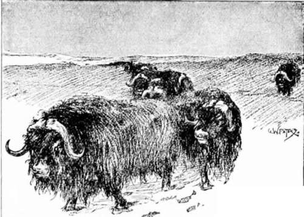
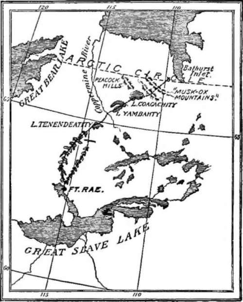

Hunting Musk-Ox With The Dog Ribs
Description
This section is from the book "Hunting", by Archibald Rogers. Also available from Amazon: Hunting.
Hunting Musk-Ox With The Dog Ribs
In the seventh of July, 1893, I landed at Fort Rae, an isolated and insignificant station kept by a chief trader of the Hudson's Bay Company. Rae lies sixty miles north of the main body of the Great Slave Lake, and about nine hundred miles north of the last railway point. The main object of my journey to the Far North was to obtain musk-ox for museum specimens. I had chosen Rae as my headquarters; as it is the nearest post to the Barren Ground, which occupies the northeastern portion of the continent beyond a line drawn from the mouth of the Churchill River to the mouth of the Mackenzie. The musk-ox are now hunted by the Eskimo from Hudson's Bay and the shores of Coronation Gulf, and by the Indians from Fort Good Hope to the eastern end of the Great Slave Lake. They were found ten years ago at the edge of the timber; but they have been hunted during the last few years for their robes, until they have been driven back from one to two hundred miles beyond the limit of forest growth. I expected to engage Indians to accompany me into the Barren Ground during the months of October and November. I secured the services of a young Indian at the fort, who I soon found would not be of any use as "either man or boy;" and as there were no others available as interpreters, I was of necessity interpreter, official head, dog-driver, hunter, artist, naturalist, and cook of the expedition, though the duties of the last functionary never became very onerous.
Difficulties soon arose to prevent the accomplishment of my plans. The Indians decided to abandon the fall hunt altogether; as the days are short, and severe storms prevail at that season, making the trip into the Barren Ground extremely dangerous. Four years ago a man was lost and never seen again, and each year one or more hunters are stricken with paralysis resulting from the hardship and exposure.
There was no alternative but to wait until spring, when the longer days and milder weather would permit us to travel.
Another, quite unexpected, obstacle was the superstition of the Indians, which manifested itself when I attempted to make a summer trip into the Barren Ground. They firmly believed that the animals which I sent down to be mounted would live forever, and would be in such a happy state that they would induce all the vast herds of musk-ox and reindeer of the Barrens to migrate, and join them in the mysterious "Mollah Endah," or white man's country.
Although they looked upon any white man not connected with the Company as lawful prey, who was to pay exorbitant prices for their services because "you are rich and we are poor," their superstition was stronger than their cupidity. On the fourth of March I told a party of four, who had come to the fort for ammunition for the hunt, that I was going with them whether they wanted me to do so or not.
With the aid of the fort interpreter we discussed the matter until midnight. Johnnie Cohoyla, a petty chief, was leader of the party. He finally consented to "look after me," which meant to look at me doing my own work, and to cook for me—if I purchased meat for him and his family, which became surprisingly large in a short time. In return I agreed to pay two "skins," or one dollar a day, and supply tea for our party during the trip.
We started late on the 5th for the Indian camps at the edge of the timber. I was not in a cheerful mood as I hitched in my dogs for the long journey, which the Dog Ribs emphatically declared would kill me, as they, accustomed to such a life, "found it hard." I would have to walk or run on snow-shoes the entire distance, and not lie in a portable bed or cariole, as do most travellers in the interior of the Far North, while some native driver attends to the team. I would not hear an English word for two months, and the antagonism of the unwilling Indians must prove a source of constant annoyance.
Herd of Mask-Ox
My outfit consisted of a 45—90 Winchester and ammunition, fifteen pounds of dried caribou meat, eighteen pounds of frozen bread, several pounds of tea, and a few ounces of salt. My bedding consisted of a single four-point blanket sewed to a light deerskin robe.
Johnnie tried to "plant" me on the hundred and fifty mile trip to the camps. He would have walked that distance in two days, but his dogs were not equal to the task; and though they were beaten until their heads were bruised and bleeding, they could not reach our destination in less than three days. My ankles troubled me with the torturing mal de raquette, which made me very glad to see the dirty, smoke-begrimed lodges with their swarm of dogs and half-naked children. The whole camp was soon wrangling over my last pinch of salt. I was dependent upon my rifle or the Indians for meat, which with tea made up the bill of fare for the next two months.
Map of the Country Traversed, showing the Author's Route from Fort Rae.
The Dog Ribs were not ready for the great Etjerrer-kah,—musk-ox hunt. They must first make new snow-shoes, sled-lines, and moccasins; caribou must be killed, and pounded meat and grease prepared. We moved our camp twice during the next three weeks, which interrupted the dreary, monotonous rubdub of the Dog Rib drums, to the beating of which the beggars sat and gambled from early morning until midnight.
On the evening of the 28th my dogs were not to be found at feeding-time: "Te-kah ils mangeaient vos chiens as'soir," said Johnnie. "Yazzy tekah thlohn," said the others. "The wolves will eat your dogs to-night."
"Yes; the wolves are very numerous." Without the dogs I could do nothing; missing this opportunity I must remain another year in the country, or go back to Iowa without these, the most difficult to obtain of American mammals. After a long search the next morning, I found two of them feeding upon the remains of a caribou six miles from camp; and by 3 p.m., just as I was concluding arrangements to buy two miserable little giddies, the other two dogs made their appearance. I felt that a year of my life had been restored!
Continue to: